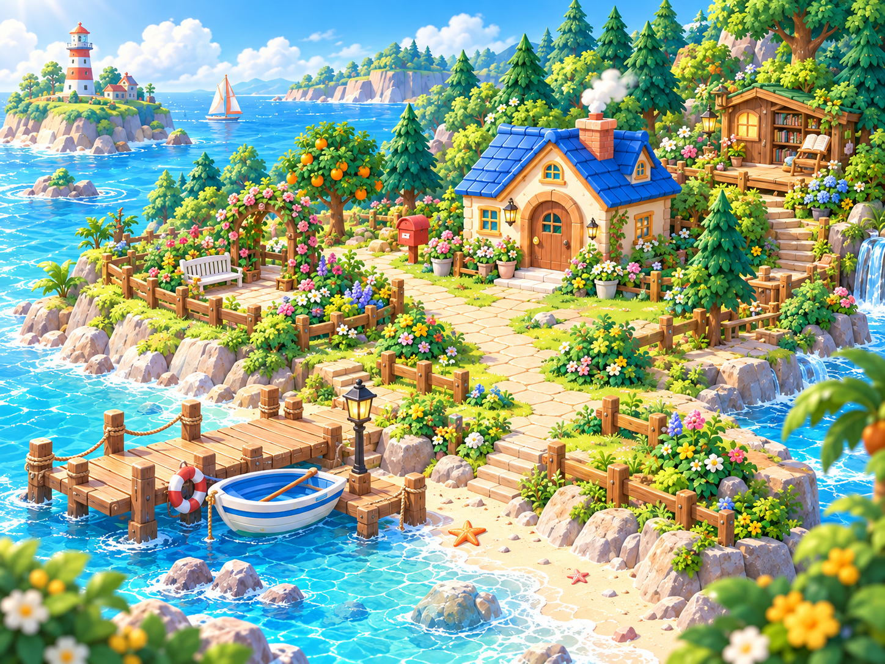

小岛成长 · 整合体验版
把每一天的努力，
变成看得见的家园。
安排一件事，完成一点努力。
和小伙伴一起，让自己的小岛慢慢长大。
已整合作业、周期任务、课表、报告、积分兑换与收藏。
这是隔离 Demo：数据只保存在当前浏览器，不连接线上家庭。
可在家长端「家庭 → 数据与本机体验」导入旧版 JSON 备份。
HOMEWORK ISLAND · GROW A LITTLE EVERY DAY

安排一件事，完成一点努力。
和小伙伴一起，让自己的小岛慢慢长大。
已整合作业、周期任务、课表、报告、积分兑换与收藏。
这是隔离 Demo：数据只保存在当前浏览器，不连接线上家庭。
可在家长端「家庭 → 数据与本机体验」导入旧版 JSON 备份。